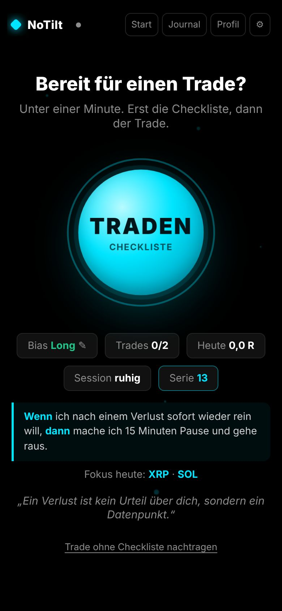
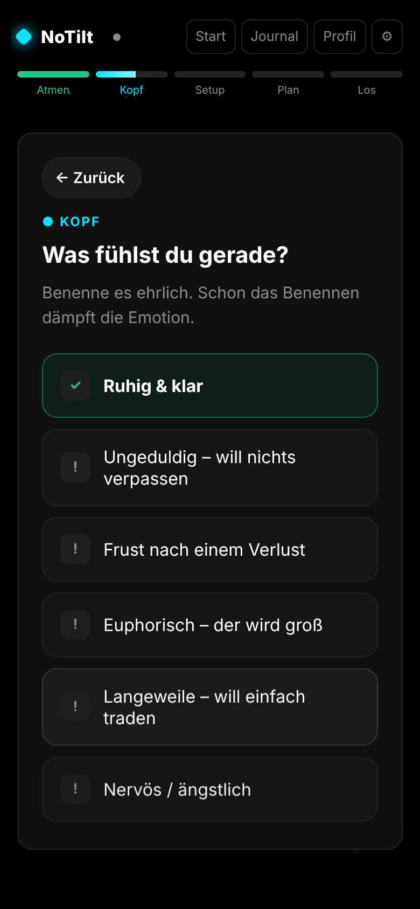
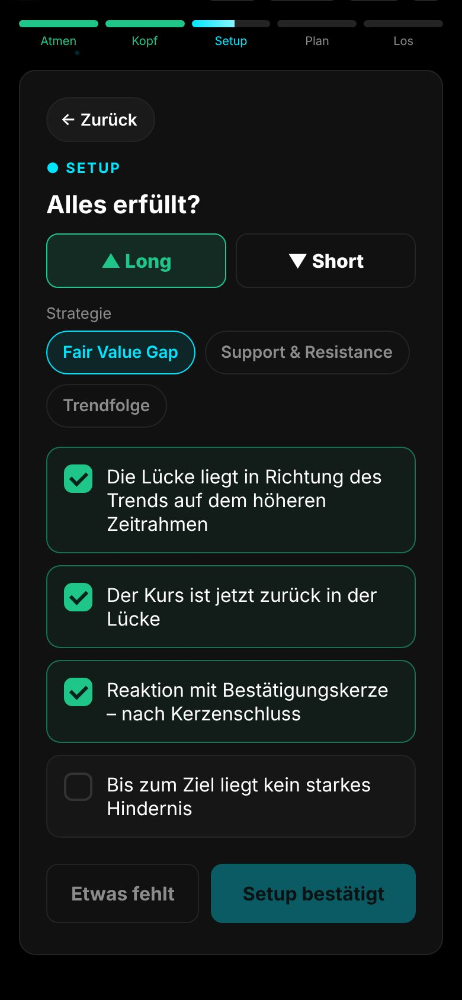
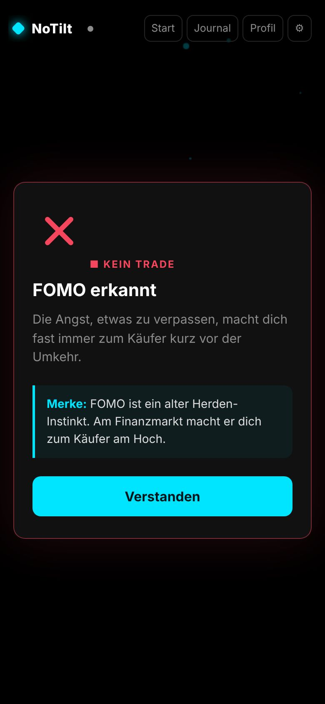
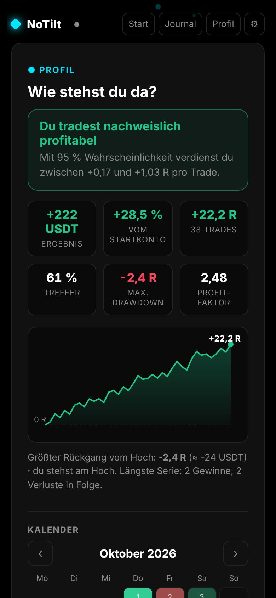
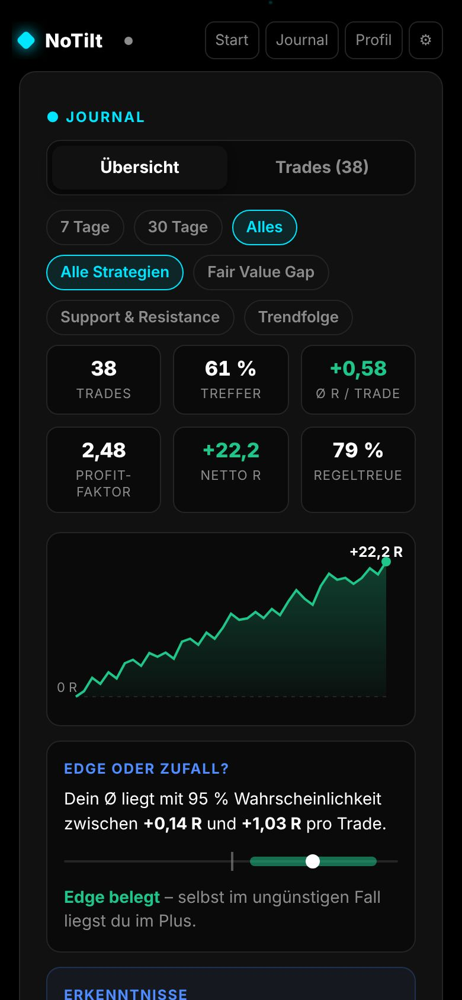

Tradest du noch –
oder tiltest du schon?
NoTilt ist die 60-Sekunden-Checkliste vor jedem Trade. Sie stoppt FOMO, Revenge-Trades und verschobene Stops, bevor sie dich Geld kosten. Und das Journal zeigt dir, welcher Fehler dich am meisten kostet.

Deine Strategie ist selten das Problem. Der Moment vor dem Klick schon.
Im Poker heißt es „Tilt“: Emotionen übernehmen, und du spielst nicht mehr dein Spiel. Beim Traden sieht Tilt so aus:
Du springst hinterher – kurz bevor er dreht.
Du willst es zurückholen, mit mehr Risiko und weniger Plan.
Aus einem kleinen Verlust wird ein großer.
Die Verlierer laufen, die Gewinner schneidest du ab.
Ich trade Krypto-Futures. Wie viele habe ich mit Kursen, Videos und Routinen von erfahrenen Tradern angefangen. Mit KI habe ich mir sogar ein eigenes Backtesting-Tool gebaut, um meine Strategien zu testen.
Dabei wurde mir klar: Das Wissen war nicht das Problem. Ich wusste, wohin der Stop gehört. Ich wusste, dass man nach einem Verlust Pause machen sollte. Im entscheidenden Moment hat das aber nicht immer gereicht – weil da nicht der Kopf entscheidet, sondern das Gefühl.
Also habe ich mir mit KI eine App gebaut, die vor jedem Trade die richtigen Fragen stellt: Wie fühlst du dich gerade? Ist dein Setup wirklich komplett? Stimmt das Chance-Risiko? Wenn nicht, sagt sie dir klar: Kein Trade.
Ein Grundsatz war mir dabei wichtig: Jede Funktion braucht einen Grund aus der Forschung. Keine bunten Belohnungen für Gewinne, keine Signale, kein Schnickschnack. Nur das, was nachweislich hilft, bei seinem Plan zu bleiben.
Fil, Gründer von NoTilt
Unter einer Minute. Vor jedem Trade.
Du drückst auf TRADEN, und NoTilt führt dich Schritt für Schritt: Atmen, Kopf, Setup, Plan, Los. Erst wenn alles stimmt, bist du drin.
Einmal am Tag: Struktur, News, Bias. Danach suchst du nur noch in eine Richtung.

9 Sekunden Atmen, dann ehrlich benennen, wie du dich fühlst. FOMO oder Frust? Dann heute kein Trade.

Deine eigenen Regeln als Haken. Für jede Strategie andere Fragen – du legst sie selbst fest.

Einstieg, Stop, Ziel. NoTilt rechnet Chance-Risiko, Positionsgröße und Liquidation – und stoppt dich, wenn es nicht passt.
Alle Screenshots mit Beispieldaten.
Sieh schwarz auf weiß, was dich Geld kostet.
- Fehler mit Preisschild„FOMO-Einstieg hat dich 8,2 R gekostet.“ NoTilt rechnet aus, welcher Fehler dich am meisten kostet.
- Edge oder Zufall?Ein statistisches Konfidenzintervall zeigt, ob deine Ergebnisse belastbar sind – oder ob du einfach Glück hattest.
- Regeltreue statt nur GewinnDeine Disziplin-Serie zählt Tage, an denen du deinen Plan eingehalten hast – nicht Tage mit Gewinn.
- Wochenrückblick2 Minuten am Wochenende: Was lief gut, was nicht, und ein klares Ziel für die nächste Woche.
- Import von deiner BörseTrades per CSV aus deiner Börse übernehmen, z. B. Bitget oder Binance.


Jede Funktion hat einen Grund aus der Forschung.
Keine Bauchgefühl-Features. Hier ist, worauf NoTilt aufbaut.
Checklisten verhindern Fehler unter Druck
Als Krankenhäuser weltweit eine kurze OP-Checkliste einführten, sank die Sterblichkeit von 1,5 % auf 0,8 %. Piloten fliegen aus demselben Grund nie ohne. Nicht weil sie es nicht wissen – sondern weil man unter Druck Dinge übersieht.
Ein Seufzer beruhigt schneller als Grübeln
Zweimal einatmen, lange ausatmen: In einer Stanford-Studie senkte dieses „zyklische Seufzen“ die Anspannung und hob die Stimmung – stärker als Achtsamkeitsmeditation.
Ein Gefühl benennen dämpft es
Wer seine Emotion in Worte fasst, senkt messbar die Aktivität der Amygdala – des Alarmzentrums im Gehirn. Darum fragt NoTilt: Was fühlst du gerade?
Nach Verlusten steigt die Risikobereitschaft
Wer im Minus ist, will „auf null kommen“ und geht dafür mehr Risiko ein. Deshalb gibt es nach jedem Trade eine Pause – nach Verlusten eine längere.
Verlierer halten, Gewinner zu früh verkaufen
Einer der bestbelegten Fehler von Anlegern. Statt sofort zu handeln, tippst du in NoTilt den Impuls an – und bekommst ihn gespiegelt.
„Wenn X, dann Y“ wirkt im entscheidenden Moment
Vorsätze in Wenn-dann-Form werden deutlich häufiger umgesetzt als allgemeine Ziele. NoTilt nutzt sie vor jedem Trade und für dein Wochenziel.
Wer seinen Fortschritt misst, erreicht seine Ziele eher
Eine Auswertung von 138 Studien zeigt: Regelmäßiges Festhalten des eigenen Verhaltens erhöht die Zielerreichung – besonders, wenn es aufgeschrieben wird.
Gewohnheiten brauchen Zeit – und Nachsicht
Bis ein Verhalten automatisch wird, vergehen im Schnitt rund 66 Tage. Ein verpasster Tag schadet dabei kaum. Darum hat deine Serie einen Joker pro Woche.
Was NoTilt nicht ist.
NoTilt sagt dir nie, was du kaufen sollst. Es prüft nur, ob du dich an deine eigenen Regeln hältst.
Kein Zugriff auf dein Börsenkonto, keine API-Schlüssel. Gehandelt wird weiter bei deiner Börse.
Disziplin ist eine Voraussetzung für langfristigen Erfolg – aber kein Versprechen. Gehebelter Handel bleibt riskant.
In 20 Sekunden auf deinem Home-Bildschirm.
NoTilt ist eine Web-App: kein App Store nötig, läuft auch offline und synchronisiert sich mit Konto über alle Geräte.
- In Safari die App öffnen
- Teilen-Symbol antippen
- „Zum Home-Bildschirm“ wählen
- In Chrome die App öffnen
- Menü ⋮ antippen
- „App installieren“ oder „Zum Startbildschirm“
- In Chrome die App öffnen
- Installieren-Symbol in der Adressleiste
- Oder in Safari: Ablage → „Zum Dock hinzufügen“
Gut zu wissen.
Brauche ich ein Konto?
Nein. Du kannst sofort ohne Konto loslegen – dann liegen deine Daten nur auf diesem Gerät. Mit Konto ist dein Journal auf allen Geräten gleich.
Wo liegen meine Daten?
Ohne Konto nur auf deinem Gerät. Mit Konto auf Servern in Frankfurt am Main (EU). Du kannst jederzeit alles als CSV oder Backup exportieren und dein Konto komplett löschen.
Kann ich meine eigene Strategie eintragen?
Ja. Du startest mit Vorlagen (z. B. Fair Value Gap, Trendfolge, Support & Resistance) oder beschreibst deine Strategie von null. Jede Strategie bekommt ihre eigenen Fragen.
Gibt es Erinnerungen?
Ja, auf Wunsch eine tägliche Erinnerung an deinen Tages-Check und an den Wochenrückblick. Am iPhone geht das, sobald NoTilt auf dem Home-Bildschirm ist.
Funktioniert NoTilt offline?
Ja. Änderungen werden gespeichert und synchronisiert, sobald du wieder online bist.
Ist das Anlageberatung?
Nein. NoTilt ist ein Werkzeug für Disziplin und Selbstbeobachtung. Es gibt keine Empfehlungen, was oder wann du handeln sollst.
Der beste Trade ist manchmal
der, den du nicht machst.
Gib deinem Plan 60 Sekunden, bevor du klickst.
NoTilt starten